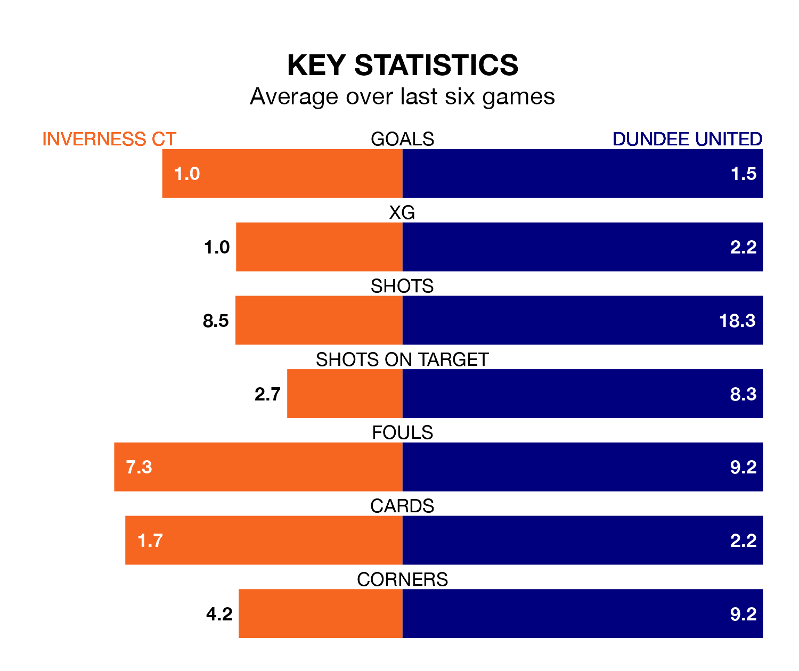

Dundee United travel to the Tulloch Caledonian Stadium for Friday's late match against Inverness CT looking to bounce back from defeat last time out in Scottish Championship.
The Terrors, who sit second in the league after 19 games, fell to a 3-2 home defeat to Greenock Morton on January 6.
They face an Inverness CT side who picked up a win in their last match, a 3-1 victory against Ayr United, and who sit seventh in the table.
With 42 goals in 19 games so far this season, Dundee are the league's highest scorers with 2.2 goals per game. And they are conceding fewer than average, letting in 10 goals at a rate of 0.5 per game.
Inverness CT, meanwhile, are below average scorers, with 1.1 goals per game, compared to a league average of 1.4. They have conceded 1.2 goals per game.
With Jack Walton between the sticks, United can rely on one of the league's safest pair of hands. He has kept 11 clean sheets in his 19 appearances this season, and no 'keeper has prevented the opposition scoring more often in Scottish Championship.
In ICT's net, Mark Ridgers has three clean sheets in 20 games. He has conceded a goal every 82 minutes, more than twice as often as the 171 minutes between goals for Walton.
In the last 10 years, Inverness CT and Dundee have played each other on 26 occasions. Inverness CT won six of them, Dundee 11, and they drew nine times.
On average, ICT scored 1.0 goal and the Terrors 1.3 in those matches.
Their last meeting was on November 4, when they played out a 1-1 draw.
The home team are in disappointing form in Scottish Championship, with one win and two draws from their last six games.
With three wins and a draw over that period, the Terrors' form is better – they have taken 10 points from 18, compared to Inverness CT's five.
Updated: 13:38 (UTC), 10/01/24